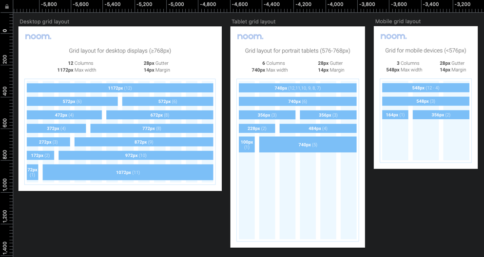
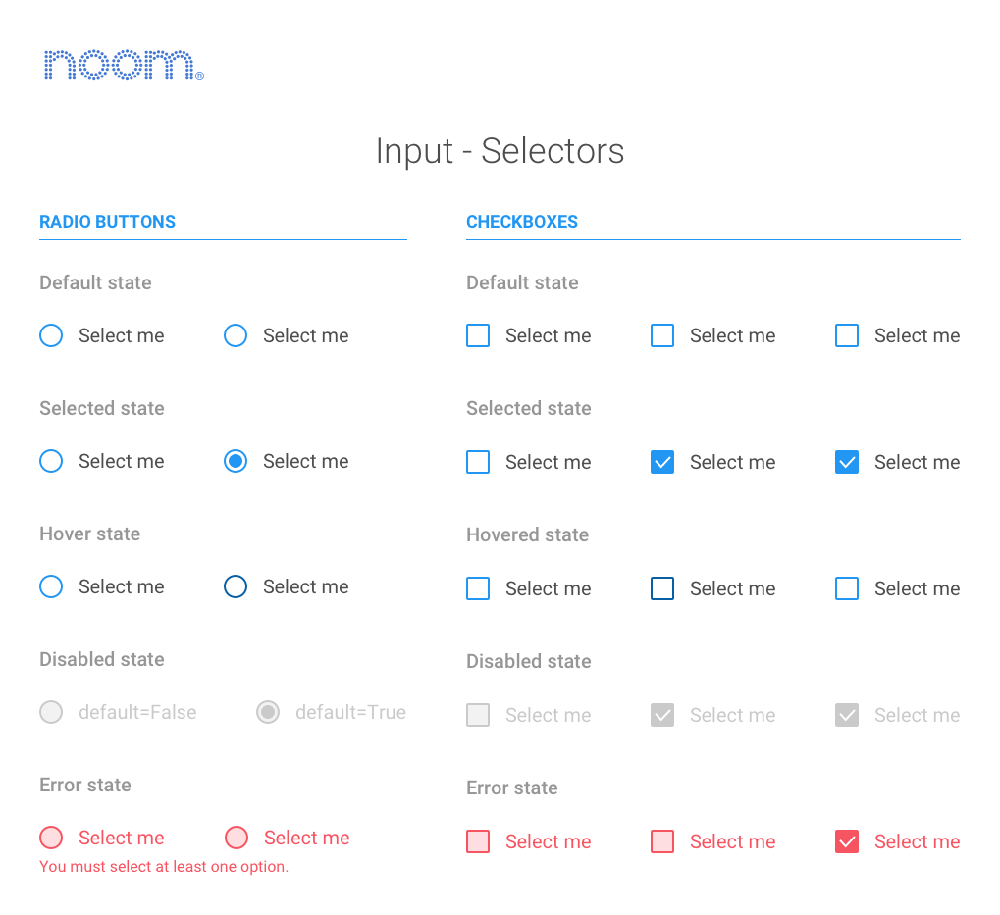
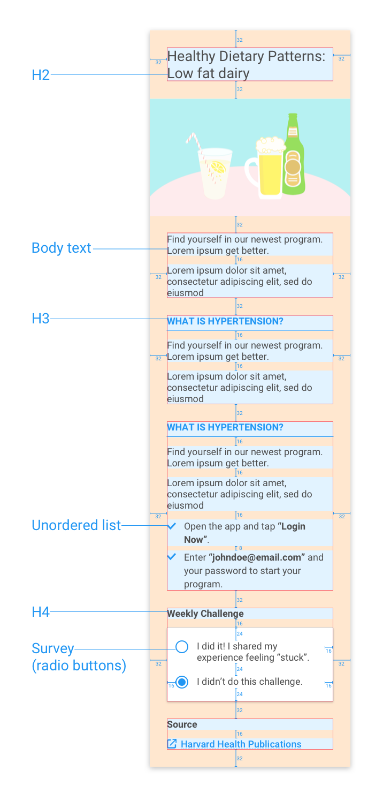

The Situation
The frontend development and design team were required to build out responsive enrollment sites that are available for whitelabeling for healthcare provider clients.
Each client requested different features to be made available on these deployment sites. As a result of this, implementing each one of these customized sites required a significant amount of effort from the development team.
At the same time, the main mobile app for Noom Coach supported more than 15 different screen sizes. With the large variance in mobile screen sizes, it was quickly becoming tedious for us to specify those interactions manually every time a feature needed to be pushed out.
The Task
To address this problem, the proposed solution was to establish a shared style guide which documents the behaviour, state, and visuals of each UI element. Providing a coherent, and scalable style guide allowed us to maintain the visual language throughout the different workflows, while significantly reducing the development time required for each deployment.
Actions taken
We jumped into research by understanding how similar organizations have tried to tackle similar problems. One of the things I found were that similar companies have been addressing the issue of remaking design components and aspects of design systems.
A number of articles on Medium pointed to the atomic design system, something Brad Frost talks about in his book.

Building blocks of an atomic design system
Grid system
Having a grid system allows us to specifically define how screens look across different device sizes. There's no point reinventing the wheel, I just borrowed bootstrap's grid system and adapted it to our margin values.

How the grid looks across multiple screen sizes
Input selectors
How the different input selectors would look given the conditions allows us to dictate the system.

Input selector behaviour patterns
How it's all applied
A number of redlined examples are included in the style guide to show how it's actually applied given the overarching information architecture. We don't actually redline designs for actual design to development hand-off, since Zeplin does it 100 times more efficiently.

Redlines applied to a health article page for demonstration
A lot of these components were common elements that have been used in different parts of the app and web flow previously. But since the projects were handled by different designers across multiple sprints, there were a lot of discrepancies between the behaviour and appearance of these components.
The biggest challenge I faced while designing the style guide was trying to keep the visuals in accordance with the brand, while consolidating all the different behaviours and states.
Collaboration with engineering and design
A lot of the work that went into this was me Slacking people asking, "Hey X interaction does the same thing as Y interaction - what's the rationale for having two separate patterns?"
I would check in with our mobile engineers regularly when creating new interactions on whether an existing interaction pattern could be reused.
During our weekly design reviews I would report on the progress - engineers and designers would then pitch in to see whether the interactions I've documented or consolidated actually makes sense for the function they were prescribed to do.
Final Outcome
The design system style guide was distributed in two ways - we had a printable version pinned up with all our interaction flows. Each of the specific components and interactions were created as ready-to-use (and interactive) modules using React and placed in our internal development wiki at Noom.
Takeaways
Designing from a system will save design and development efforts
Having a design system makes a huge difference in consolidating the overall experiences. Especially true for fleshing out new design features - having a design system linked to a React library for example will save tons of time.
Designing from a system leads to a better end user experience
Over the years, the main app had been worked on by half a dozen designers. One of the things we noted were the discrepancies within the app, and how inconsistent some design patterns were. Taking the time to establish the design system allowed me to compare the documented interactions against the interactions on the live app, allowing teams to make the correct iterations quickly.